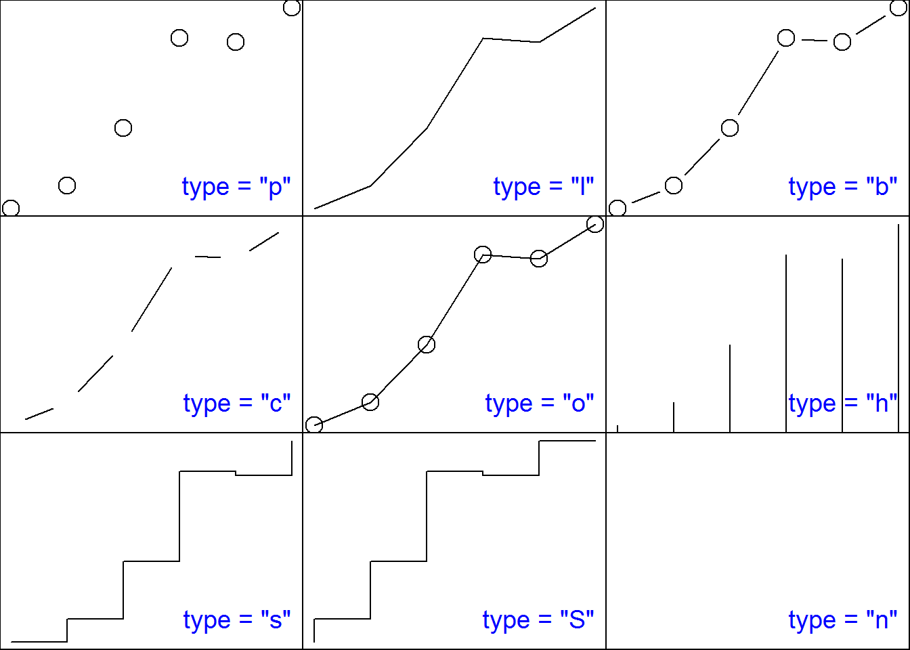

第3章 作图
从优雅的角度来讲，R是精准的、有品位的、美丽的。等我长大了，我要娶R。— Andy Bunn, May 2005
一图胜千言。— 俗语
在上两章中，我们都用到了plot()函数来作图。如果说Excel的作图方法是《秘密花园》那种书，让你在已经画好的图案里涂涂改改，很受约束的话，那么R作图的流程更加自由：就像铺开一张白纸，自己打好格，画数据点，画坐标轴，加图例，最后把纸收起来。作图的每一步，都清清楚楚掌控在你手里。
这里，我们用第2章读取的二氧化碳数据 mydata2，画一些更漂亮的图片。为了保持本章的独立性和跟上一章节的连续性，我们预先把数据读入到mydata2中(当然，也可以用 read.csv()函数把co2数据读取进来)：
mydata2 <- as.data.frame(t(matrix(
co2, 12,
dimnames = list(month.abb, unique(floor(time(co2)))))))
mydata2$year <- as.numeric(rownames(mydata2))3.1 控制图像：线型，点状，颜色
我们先做一张最简单的图，只画各年9月份二氧化碳的浓度（图3.1）。
plot(mydata2$Sep)图 3.1: plot()函数第一种用法示例：一维数据散点图.
这是plot()函数的第一种用法，也是最简单用法：绘制一维数据散点图。如果plot()的作图对象只是一个数值型的向量，那么画出的图纵向是这个向量，横向是数据的序号。
plot()函数还有别的什么用法呢？可以请F1小助理打开帮助文件。不过，今天我们请出我们的新助理：example()函数:
example(plot)运行这条代码，并在RStudio的左下面板里按照提示按回车键，就会看到很多示例。以后，想不起来某个函数的作用的时候，除了F1之外，小助理example()函数也是个很好的选择。
下面我们指定以年份为横坐标x，9月份的二氧化碳浓度为纵坐标y，做xy散点图（图3.2）：
plot(x = mydata2$year, y = mydata2$Sep)
图 3.2: plot()函数第二种用法示例：二维数据散点图.
这是plot()函数的第二种用法：绘制二维数据散点图。比较一下，跟第一种用法有什么区别？
plot()函数的第三种用法，其实在前面已经出现过了，我们重复一次：
plot(mydata2)在这种用法里，plot()的作图对象是个多行多列的数据框（mydata2），画出的是任意两列分别作为x和y的散点图。这时，plot()函数等同于pairs()函数：
pairs(mydata2)喜欢刨根问底的初学者可能对plot()函数的多种用法感到困惑。我们打个比方就容易理解了，这就好比佛教里的观音菩萨有32种化身，应众生的需要而以不同面孔示人。需要救人参果树的时候，菩萨就持杨柳枝；需要收鲤鱼精的时候，菩萨就编个鱼篮；适当的时候，菩萨还会伸出千手，或者送上个娃。plot()函数也是如此，根据你的需要来发挥不同的作用。除了这三种化身外，还有第四第五以及更多化身，我们在以后的课程中遇到再说。
当然，菩萨不止观音一位，R的作图函数除了plot()外还有很多，见小贴士3.1。他们的用法大同小异，可以咨询example()小助理。不过，我们这次有请example()助理的小姐妹——示范函数demo()来帮忙：
demo(graphics)就像example()小助理一样，按照提示按回车键，就会看到各种作图函数的示范了。
| 函数 | 用途 |
|---|---|
plot() |
主要用作散点图 |
pairs() |
散点图矩阵 |
symbols() |
气泡图 |
hist() |
直方图 |
curve() |
函数曲线图 |
barplot() |
柱状图 |
boxplot() |
箱式图 |
coplot() |
条件散点图 |
dotchart() |
点图（克利夫兰点图） |
stripchart() |
一维散点图 |
image() |
矩阵方格图 |
contour() |
等高线图 |
在前面这些绘图操作里，我们没有对R额外要求什么，于是R就按默认值自行标注了坐标轴的名称、取值范围、数据点的类型。下面我们重新画一张图，来指定横坐标名称为“Year”，纵坐标名称为“CO2 in Sep”，图形类型为线形，纵坐标的展示范围为300到400 ppm（图3.3）。
plot(x = mydata2$year, y = mydata2$Sep,
xlab = "Year", ylab = "CO2 in Sep",
ylim = c(300, 400), type = "l")图 3.3: plot()函数col参数的用法示例.
我们看到，plot()函数里除了用x=和y=两个参数来指定数据点横纵坐标外，还用xlab（x label的缩写）、ylab等参数来指定作图的细节。
R所有的函数都是这样使用的，比如我们前面见过的读取数据函数read.table()，就是用header参数来指定要不要把第一行当作列名称，用sep（separation的缩写）参数来指定列与列之间用什么符号分隔：
mydata2 <- read.table(file = myfile2,
header = TRUE, sep = ",") 那么，一个函数里允许指定哪些参数呢？我们怎么才能记住这么多不同函数的不同参数呢？
没人记得住，也没必要记住。我们都是用tab小助理来调出参数列表后选择一个，或者F1小助理来查看帮助文件。下面，我们介绍plot()几个常用的参数。
type参数用来指定把数据点画成点还是画成线。最常用的是l表示线（line），p表示点（point）。此外还可以是b, c, o, h, s, S, n。见小贴士3.2。
plot()函数的type参数

我们可以试着把上一句作图命令改为：
plot(x = mydata2$year, y = mydata2$Sep, type = "p")图 3.4: plot()函数：pch 默认值.
当数据点类型设置为p时，默认画出来的数据点是个小圆圈（图3.4）。不喜欢的话，可以用参数pch（point character的缩写）来指定数据点的形状（图3.5）。
plot(x = mydata2$year, y = mydata2$Sep, type = "p", pch = 20)图 3.5: plot()函数示例：pch = 20.
pch = 20表示采用20号字符。20号字符是什么？见小贴士3.3。
当然，pch也可以随意是用你喜欢的任何字符，比如我们用字母’z’（图3.6）：
plot(x = mydata2$year, y = mydata2$Sep,
type = "p", pch = 'z')图 3.6: plot()函数示例：pch = “z”.
类似的，当数据点类型是l（line，线）时，默认是实线。不喜欢的话，可以用lty参数（line type的缩写）指定是虚线还是实线，比如（图3.7）：
plot(x = mydata2$year, y = mydata2$Sep, type = "l", lty = 2)图 3.7: plot()函数示例：lty参数.
颜色参数col（color的缩写）可以设为颜色的名称，比如蓝色（图3.8）。
plot(x = mydata2$year, y = mydata2$Sep, type = "l", lty = 2,
col = 'blue')图 3.8: plot()函数示例：蓝色数据点.
R认识哪些颜色呢？输入并运行：
colors()## [1] "white" "aliceblue"
## [3] "antiquewhite" "antiquewhite1"
## [5] "antiquewhite2" "antiquewhite3"
## [7] "antiquewhite4" "aquamarine"
## [9] "aquamarine1" "aquamarine2"
## [11] "aquamarine3" "aquamarine4"
## ......
## [653] "yellow1" "yellow2"
## [655] "yellow3" "yellow4"
## [657] "yellowgreen"有657种颜色名称可以使用。趁此机会学一下外语吧，有些颜色名称听都没听说过。

我们看看这657种颜色中第26个颜色叫什么名字：
colors()[26]## [1] "blue"正是蓝色。col = colors()[26] 这个参数设置跟col = 'blue' 是完全等同的。我们可以用颜色编号的方法，给上图的数据点染上不同的颜色。我们有39个数据点，那么我们依次染上第27到65个颜色（图3.9）：
图 3.9: plot()函数示例：多色数据点.
从这一刻起，R 开始显得惊艳了。
这里我们用cex参数（character expansion的缩写）来设定数据点的绘制尺寸，值越大，点画得就越大。
从名字挑颜色不够直观，经常是想起了颜色却叫不出名字，看见了英文名字却不知道是什么颜色。没关系，我们再次请demo()小助理来帮忙：
demo(colors)按照提示按回车键，就会看到颜色连同名称的展示。
demo()函数够酷。然而，并非所有函数都可以请demo()来帮忙的。运行：
demo()会看到一个表格，列出了可供展示的函数。例如，我们看到其中有persp， 那么可以运行：
demo(persp)将来我们学到函数和扩展包时，demo()小助理还会发挥更大的作用，到时候再说吧。
刚才我们给数据点染上颜色后，发现选的这些颜色对比不是很明显。R提供了多种配色方案函数可以选用，比如彩虹函数rainbow()。
rainbow(n = 39)## [1] "#FF0000FF" "#FF2700FF" "#FF4E00FF" "#FF7600FF"
## [5] "#FF9D00FF" "#FFC400FF" "#FFEB00FF" "#EBFF00FF"
## [9] "#C4FF00FF" "#9DFF00FF" "#76FF00FF" "#4EFF00FF"
## [13] "#27FF00FF" "#00FF00FF" "#00FF27FF" "#00FF4EFF"
## [17] "#00FF76FF" "#00FF9DFF" "#00FFC4FF" "#00FFEBFF"
## [21] "#00EBFFFF" "#00C4FFFF" "#009DFFFF" "#0076FFFF"
## [25] "#004EFFFF" "#0027FFFF" "#0000FFFF" "#2700FFFF"
## [29] "#4E00FFFF" "#7600FFFF" "#9D00FFFF" "#C400FFFF"
## [33] "#EB00FFFF" "#FF00EBFF" "#FF00C4FF" "#FF009DFF"
## [37] "#FF0076FF" "#FF004EFF" "#FF0027FF"每个字符串代表一个颜色。彩虹函数要求给参数n设定一个整数值，只有这样R才知道该把彩虹的色带平均分割成几种颜色。我们现在有39个点，那么就让n = 39，看看能画出怎样的彩虹（图3.10）。
plot(x = mydata2$year, y = mydata2$Sep, type = "p", pch = 20,
col = rainbow(n = 39), cex = 3)图 3.10: plot()函数示例：col参数彩虹数据点.
请用example()小助理来调出rainbow()函数的示例。可以看到，除了rainbow()外，还有几个类似的色彩函数，用法也类似。小贴士3.3展示了他们的色带范围。
有了颜色参数，我们的作图本领更加强大，可以重新考虑一下 mydata2 这个数据框了。
实际上，mydata2的每个数据点都包含了三个内容：“年份”，“月份”，“CO2浓度”。这是个三维数据。我们前面由于刚刚入门，受作图能力所限，只能把数据“降维打击”17成了二维，只保留了“年份”和“浓度”两个维度（当然也可以只保留“月份”和“浓度”，或“年份”和“月份”，但后者实在无趣）来作图。既然每个点都可以指定一个特有的颜色，那么就可以用颜色来表示这些数据点的第三个维度。
下面，我们将作一个散点图，图上每个点的横坐标是“月份”，纵坐标是“年份”，每个点的颜色表示“浓度”，在色带上，越偏向紫色就表示浓度越大（紫移），越偏向红色就表示浓度越小（红移）。
我们先用 unlist()函数（见第8.1节）把“浓度”这个数据框转换成一个向量，作为第一个维度：
myco2 <- unlist(mydata2[, 1:12])
myco2 <- round(myco2)为了简化后面的操作，我们用 round() 函数对浓度数据进行了四舍五入。
然后，用一个向量myyear来存储第二个维度“年份”：
myyear <- rep(mydata2$year, 12)rep()是重复函数（repeat的缩写）。由于每年12个月，所以，每个年份重复12次。
最后，用向量 mymonth 来存储第三个维度“月份”，每个月份重复的次数是数据里出现的年数，也就是行数：
mymonth <- rep(1:12, each = nrow(mydata2))三个维度的数据准备完毕，下面准备一下每个数据点的颜色。我们用rainbow()函数根据浓度数值的大小给数据点确定一个颜色：
n <- diff(range(myco2)) # 彩虹分割的颜色数量
mycolor <- rainbow(n)[myco2 - min(myco2) + 1]一切准备就绪，可以作图了：
plot(x = mymonth, y = myyear,
col = mycolor, cex = 10, pch = 15)图 3.11: plot()函数示例：三维图.
得到的图3.11里，沿着横向看就是CO2浓度的逐月变化，沿纵向看就是年际变化。我们的图升维了。
事实上，R 里有另外一个函数image()，可以一步做出类似的颜色图（图3.12）。
image(t(as.matrix(mydata2[1:12])), col = rainbow(n))图 3.12: image()函数示例.
image()函数将在第5.4节再度露面，届时我们再做进一步介绍。
plot()函数的参数很多，那么就允许数据有更多维度。例如，把数据来源作为第四个维度，那么我们可以用数据点的不同大小来表示（cex参数），亚洲的数据用大号数据点，欧洲用中号等等。我们可以随意对图进行维度改造了！
要想对作图进行更精细的控制，可以使用plot()函数的其他参数、par()函数、axis()函数等。这个我们在后面会详细介绍，如果你迫不及待的话，请你自己找F1小助理问问吧。
3.2 丰富内容：直线、网格和图例
为了让图更容易被读懂，我们经常需要给图像添加直线、网格、图例等，这超出了plot()函数的职能范围，需要别的函数来实现。
在现有的图上添加直线，可以用abline()函数（图3.13）：
plot(x = mydata2$year, y = mydata2$Sep)
abline(h = 350)
abline(h = 360, v = 1980, col = 'red')
abline(h = seq(from = 320, to = 340, by = 5),
v = seq(from = 1970, to = 1990, by = 5),
col = 'grey')h参数（horizontal）表示水平线，v参数（vertical）表示垂直线。seq()函数（sequence的缩写）用来生成指定的数列。网格线其实就是一组间隔相等的直线，用seq()函数生成一组h或v值即可。
abline的全称是 “截距\(a\)和斜率\(b\)的直线”。顾名思义，除了用h和v来画水平和垂直线外，还可以用参数\(a\)和\(b\)来画斜线。
abline(a = -2240, b = 1.3)往图中添加图例，一般使用legend()函数：
legend(x = 1970, y = 350, legend = 'Sep', pch = 1)图例放置的位置有多种设置方法。上面的例子是用坐标位置(x, y)确定的。还可以用内置模板来指定，例如用topleft设置在左上角，center设置在中央等等：
legend("topleft", legend = 'Sep', pch = 1)还可以用鼠标确定位置，指哪儿打哪儿：
legend(locator(1), legend = 'Sep', pch = 1)上面这个命令运行后，R会等待你用鼠标左键在图上点击一下，再按Esc键，R就知道点击位置的坐标了。
legend()函数的参数很丰富灵活，可以用来控制图例的点形、线状、颜色、边框等。请咨询F1小助理吧。
图 3.13: 给图上增添直线、网格和图例，.
除了可以增添直线、网格和图例，我们将在第4章里介绍如何用text()函数增添文字、用expression()函数添加公式。我们还可以用box()函数添加边框，rect()函数添加矩形，arrow()函数添加箭头或误差线等。小助理那里什么资料都有，本书就不做详细介绍了。
3.3 多图合一：三种布局
我们经常需要把多张图画在一起，有时候是为了做对比，有时候为了节省空间。多图合一常见的页面布局大体分三种情况。
第一种情况，是在同一个坐标系里绘制多组(x,y)数据点。比如图3.14，以月份为x，1959年和1997年各月二氧化碳浓度为y。
图 3.14: 多图合一布局1.
该布局的特点是两条曲线共享同一个x-y坐标系。这种图的作法很简单，先按我们前面学过的plot()函数画出一组y1图像，
plot(x = 1:12, y = mydata2['1959', 1:12],
xlab = 'Month', ylab = expression(CO[2]),
ylim = c(310, 370),
type = "l", lty = 2, col = 'blue')再用points()或者lines()函数添加y2的图线。
lines(x = 1:12, y = mydata2['1997', 1:12], col = 'red')
#或者
points(x = 1:12, y = mydata2['1997', 1:12], col = 'red',
type = 'l')刚才画这张图里，两年的二氧化碳浓度的取值范围相差比较大，季节变化显示得不够明显，不如使用另一个新的纵坐标。这就是多图合一的第二种情况，即同样是多组xy，横坐标相同，但纵坐标不同，我们以副坐标轴的形式来展示。方法是各自独立绘图，并且在画两个图之间加一个par(new=TRUE)命令，让R知道后一张图是重叠在前一张图上：
plot(x = 1:12, y = mydata2['1959', 1:12],
xlab = 'Month', ylab = '1959',
type = "l", lty = 2, col = 'blue')
par(new = TRUE)
plot(x = 1:12, y = mydata2['1997', 1:12], ylab = '1997',
type = "l", lty = 1, col = 'red')图 3.15: 多图合一布局2：错误的重叠.
这回我们没有指定y轴的作图范围，让R自动选。图画是画出来了，但怎么坐标轴的刻度和标签都重叠在一起了（图3.15）？
对呀，是我们让R重叠的，R完全是按照我们的指令做的。做得不合意，是因为我们没有把我们的心意对R说清楚（请记住这句话，以后会用得着）。
现在我们重新对R交代清楚我们想要的东西：把第二张图的y刻度和标签放在右侧，作为副坐标轴。作图分6步完成（图3.16）：
# 1. 告诉R在右侧为副坐标轴留出空间。
par(mar = c(5,4,4,4))
# 2. 画第一张图。
plot(x = 1:12, y = mydata2['1959', 1:12],
xlab = 'Month', ylab = '1959',
type = "l", lty = 2, col = 'blue')
# 3. 告诉R，下一张图跟第一张图叠加。
par(new = TRUE)
# 4. 画第二张图，但暂时不画坐标轴，也不标标签。
plot(x = 1:12, y = mydata2['1997', 1:12],
type = "l", lty = 1, col = 'red', axes = FALSE,
ylab = '', xlab = '')
# 5. 在右侧画出副坐标轴。
axis(side = 4, col = 'red')
# 6. 为副坐标轴添加名称。
mtext(side = 4, text = '1997', line = 3, col = 'red')图 3.16: 多图合一布局2: 正确的重叠.
R是个听话的仆人，吩咐他做什么就做什么；没吩咐的，他按事先的约定（默认值）来做。
上面的第一条和第三条的par()函数，用参数mar（margin的缩写）来指定图表下方、左方、上方、右方的空白有多大，用参数new来指定下一条作图命令跟上一条的作图区域相同。第四条plot()指令的axes参数设置为“假”，来禁止显示默认的坐标轴。第五条和第六条指令，先用坐标轴函数axis()在右侧画一条红色的坐标轴，然后用mtext()函数在右侧添加文字，作为新坐标轴的标签。“右侧”是side参数来确定的，它的取值可以是1、2、3、4，分别表示在图表区的下、左、上、右方向。line参数表示文字距离图表区的距离。有了axis()函数和mtext()函数，我们就可以对坐标轴为所欲为了。限于篇幅，我们不再做详细介绍，请咨询F1小助理。
多图合一的第三种情况，是绘制多个各自独立的小图，把他们拼贴在一张大图上。这仍然可以用par()函数的参数来实现。比如，我们把上图拆成左右两个小图，只需在作图前用par()的mfrow参数（matrix of figures entered rwo-wise 的缩写）告诉R，“请把这两张图放在一个表格里，这个表格是1行2列”（图3.17）：
par(mfrow = c(1, 2))
plot(x = 1:12, y = mydata2['1959', 1:12],
xlab = 'Month', ylab = '1959',
type = "l", lty = 2, col = 'blue')
plot(x = 1:12, y = mydata2['1997', 1:12],
xlab = 'Month', ylab = '1997',
type = "l", lty = 1, col = 'red')图 3.17: 多图合一布局3.
par()函数的mfrow参数是将绘图区平均分割成几块来按顺序绘图。如果需要在大图里嵌小图，则需要用par()函数的fig参数和new参数；更复杂的拼贴，可以用layout()函数来实现，简直可以随心所欲。限于篇幅，这里按下不表，感兴趣的话，请找F1小助理看看函数的帮助和示例吧。
| 项目 | 内容 |
|---|---|
| 作图函数 | plot()， boxplot() |
| 点形状 | pch = 1, pch = ‘z’ |
| 线形状 | lty = 2 |
| 颜色 | col = ‘blue’，rainbow()，colors() |
| 添加要素 | lines()，points()，abline()，axis()，box()， |
| legend()，text(), mtext()，expression() | |
| 多图布局 | par()，layout() |
| 保存图片 | pdf()，jpg()，png() |
3.4 保存图片：pdf，png，jpg
我们绘制的图片展示在 RStudio 右下窗的绘图区，并没有以独立文件的形式保存，一旦关掉 RStudio，图也就随之消失了，除非保存为指定的文件。
把图片保存到电脑里的最简单方法，是在RStudio的绘图区点击 Export，选择保存的格式和路径就可以了。不过，我们更常用的方法，是用代码，可以保证下一次运行同一段代码而输出同样的图片。
代码保存图片的流程是这样的：
#打开一张宽度为8，高度为4的白纸:
pdf('c:/r4r/fig2_13.pdf', width = 8, height = 4)
# 在白纸上画图:
plot(x = mydata2$year, y = mydata2$Jan)
# 画完了，把纸张收起来:
dev.off() pdf()函数将图片保存成pdf格式。常用的保存图片的指令，除pdf()外，还有png()、jpg()等。
3.5 课外活动： R的毛坯房与精装修
你也许已经发现，我们使用的这些作图函数虽然强大灵活，但看起来有些简陋。其实这是很正常的事，因为简陋，才能灵活。好比一套毛坯房，你可以随心所欲地装修成你想要的样子。至于装修之后好看难看有用没用，就看你的水平了。
如果你不喜欢毛坯房，R也给你提供了多套精装修的房子，那就是我们将在第9.3节讲到的扩展包（package）。这里，先给大家简单介绍一下三个作图的扩展包，展示一下R的精装房。这里涉及的函数先不必深究，只管运行即可。
首先，我们先安装这三套样板房。
install.packages(c('ggplot2', 'lattice', 'plotrix'))我们先来到ggplot2 (Wickham 2009)的展厅，请example()小助理带我们看看这个展厅的qplot()函数展台：
library(ggplot2)
example(qplot)下面再去lattice (Sarkar 2008)展厅，请demo()小助理带我们参观：
library(lattice)
demo(lattice)最后是plotrix (Lemon 2006)展厅：
library(plotrix)
demo(plotrix)感觉怎么样？只要学会了R，这些图将来我们都能轻松作出来。
你不信？现在我们就把之前做过的图用这几个扩展包重做一次。
为了方便作图，我们先准备一下数据。
mydatasub <- t(mydata2[as.character(
seq(1960, by = 5, length.out = 8)), 1:12])
x <- rep(1:12, 8)
y <- as.vector(mydatasub)
group <- rep(colnames(mydatasub), each = 12)好了，我们先用一下lattice扩展包的xyplot()函数（图3.18）：
library(lattice)
xyplot(y ~ x|group, type = c('p', 'l'),
xlab = 'Month', ylab = expression(CO[2]))图 3.18: lattice扩展包作图示例.
把选中年份的数据一下就画出来了。
再试试ggplot2（图3.19）：
library(ggplot2)
qplot(x, y, col = group, geom = c("point", "line"),
xlab = 'Month', ylab = expression(CO[2]))图 3.19: ggplot2扩展包作图示例.
第三个包plotrix，我们就不演示了，你自己试试吧。
前边我们那些多图合一的方法，在用了扩展包之后，只需简单的指令，就可以做出漂亮的图来了。
那么，R这些扩展包是怎么做出这么复杂的图的？我们有请助理团最后一位助理，神秘的vignette()函数隆重登场：
vignette('ggplot2-specs')vignette这个词在中文里实在难以找到恰当的翻译18。vignette()小助理掌管的档案跟其他助理都不同。他提供的有时是一些技术文档，有时是论文，有时是示例。我们可以用下面的指令，看看他掌管了哪些资料：
vignette(all = TRUE)对于这些资料，现在不明白不要紧，等我们学到第9章就清楚了。
| 名称 | 作用 |
|---|---|
| F1 | 展示函数的帮助信息 |
| F2 | 演示函数源代码 |
| tab | 提示和自动补全 |
example() |
函数示例，圆括号里填函数名 |
demo() |
演示，圆括号为空时查看所有可用演示 |
vignette() |
技术文档，vignette(all = TRUE)展示所有可用文档 |
References
Wickham, Hadley. 2009. Ggplot2: Elegant Graphics for Data Analysis. Springer-Verlag New York. http://ggplot2.org.
Sarkar, Deepayan. 2008. Lattice: Multivariate Data Visualization with R. New York: Springer. http://lmdvr.r-forge.r-project.org.
Lemon, J. 2006. “Plotrix: A Package in the Red Light District of R.” R-News 6 (4): 8–12.